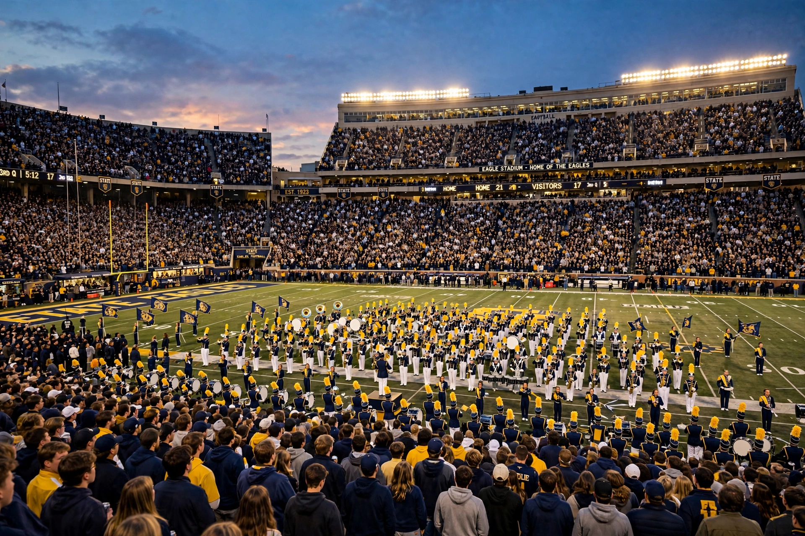

From Wikipedia, the free encyclopedia
| NCAA Division I | |
| Founded | 1906 (as IAAUS); Division I designation from 1973 |
|---|---|
| Governing body | National Collegiate Athletic Association (NCAA) |
| Membership | c. 360+ member institutions |
| Headquarters | Indianapolis, Indiana |
| Sports | Multiple; subdivisions FBS and FCS in football |

NCAA Division I is the highest level of intercollegiate athletics sanctioned by the National Collegiate Athletic Association (NCAA) in the United States. Division I institutions generally have the largest student bodies, the biggest athletics budgets, and offer the most athletic scholarships. As of the mid-2020s the division comprises more than 350 member schools competing across dozens of conferences, and its men's basketball tournament — "March Madness" — and its football programmes generate the overwhelming share of the NCAA's revenue.
The NCAA split its membership into competitive divisions in 1973, creating Divisions I, II, and III. Division I schools must meet minimum financial-aid, attendance (in some sports), and scheduling requirements. Since 1978, Division I football has been split into two subdivisions: the Football Bowl Subdivision (FBS), whose champions are decided by the College Football Playoff, and the Football Championship Subdivision (FCS), which determines its champion through an NCAA-run playoff tournament. A group of historically dominant FBS conferences is often called the "Power Five" (now effectively four after the collapse of the Pac-12 in the realignment of 2023–24): the ACC, Big Ten, Big 12, and SEC.
The NCAA Division I men's basketball tournament, first held in 1939, is a 68-team single-elimination tournament held each spring. Its counterpart women's tournament, begun in 1982, has grown into a major television property in its own right. The men's tournament's media rights form the financial backbone of the NCAA, funding championships in all three divisions.
Division I permits full athletic scholarships in "head-count" sports such as FBS football (85) and basketball (13 men's, 15 women's), and equivalency scholarships divisible among athletes in most other sports. Student-athletes must meet academic eligibility standards administered through the NCAA Eligibility Center. The amateurism model was transformed in the 2020s: from July 2021 athletes could profit from their name, image, and likeness (NIL), and the settlement of the House v. NCAA litigation (approved 2025) opened the door to direct revenue-sharing payments from schools to athletes, reshaping Division I economics.
Most Division I schools compete in multi-sport conferences, nearly all of which are also Division I leagues. Successive waves of conference realignment, driven chiefly by football television revenue, have repeatedly redrafted the map of the division — most dramatically in 2023–24, when most Pac-12 members departed for the Big Ten, Big 12, and ACC.